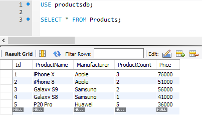

Выборка данных. Команда SELECT
Для выборки данных из БД в MySQL применяется команда SELECT. В упрощенном виде она имеет следующий синтаксис:
1 | SELECT список_столбцов FROM имя_таблицы |
Например, пусть ранее была создана таблица Products, и в нее добавлены некоторые начальные данные:
1 2 3 4 5 6 7 8 9 10 11 12 13 14 15 16 | CREATE TABLE Products( Id INT AUTO_INCREMENT PRIMARY KEY, ProductName VARCHAR(30) NOT NULL, Manufacturer VARCHAR(20) NOT NULL, ProductCount INT DEFAULT 0, Price DECIMAL); INSERT INTO Products (ProductName, Manufacturer, ProductCount, Price)VALUES('iPhone X', 'Apple', 3, 76000),('iPhone 8', 'Apple', 2, 51000),('Galaxy S9', 'Samsung', 2, 56000),('Galaxy S8', 'Samsung', 1, 41000),('P20 Pro', 'Huawei', 5, 36000); |
Получим все объекты из этой таблицы:
1 | SELECT * FROM Products; |
Символ звездочка * указывает, что нам надо получить все столбцы.
Стоит отметить, что применение звездочки * для получения данных считается не очень хорошей практикой, так как обычно необходимо получить данные по небольшому набору столбцов. Поэтому более оптимальный подход заключается в указании всех необходимых столбцов после слова SELECT. Исключение составляет тот случай, когда надо получить данные по абсолютно всем столбцам таблицы. Также использование символа * может быть предпочтительно тогда, когда названия столбцов не известны.
Если необходимо получить данные не из всех, а из каких-то конкретных столбцов, тогда спецификации этих столбцов перечисляются через запятую после SELECT:
1 | SELECT ProductName, Price FROM Products; |
Спецификация столбца необязательно должна представлять его название. Это может быть любое выражение, например, результат арифметической операции. Так, выполним следующий запрос:
1 2 | SELECT ProductName, Price * ProductCountFROM Products; |
Здесь при выборке будут создаваться два столбца. Причем второй столбец представляет значение столбца Price, умноженное на значение столбца ProductCount, то есть совокупную стоимость товара.
С помощью оператора AS можно изменить название выходного столбца или определить его псевдоним:
1 2 | SELECT ProductName AS Title, Price * ProductCount AS TotalSumFROM Products; |
Здесь для первого столбца определяется псевдоним Title, хотя в реальности он будет представлять столбец ProductName. Второй столбец TotalSum хранит произведение столбцов ProductCount и Price.